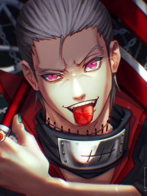

HIDAN
During his childhood, after hearing rumours about the Valley of Hell, Hidan went and found it out of curiosity. There, he was disgusted by the smell of sulphur, and discovered corpses all over the area. After returning and telling others of the corpses, they weren't surprised that the Chinoike Clan couldn't survive living in the valley, prompting Hidan to correct their assumptions and informing them that the bodies weren't skeletons but actual bodies, with their blood not dry. His story led to people suspecting Hidan of murdering them, as well as Yugakure ninja being dispatched to the area to investigate, during which they determined the slaughter to be a clan act. Know more |
|